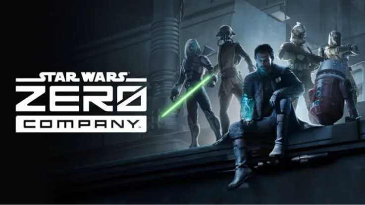

Luiso · 1 de septiembre de 2026 · 2 min de lectura
Bit Reactor, el estudio responsable de Star Wars: Zero Company, habría enviado a aproximadamente el 80% de su plantilla a una suspensión temporal de empleo apenas unas semanas antes del lanzamiento del juego. La información fue publicada por Game File, que consultó a fuentes cercanas al estudio.
El título llegó al mercado el pasado 27 de agosto y recibió una recepción crítica muy positiva, con una puntuación de 85 en Metacritic. Sin embargo, mientras el juego comenzaba su recorrido comercial, gran parte del equipo que trabajó en él ya no se encontraba activo dentro del estudio.
Según una fuente consultada por Game File, alrededor del 80% de los empleados fueron enviados a furlough, una modalidad mediante la cual los trabajadores mantienen su vínculo laboral con la compañía, pero dejan de formar parte temporalmente de la nómina activa y, por lo tanto, dejan de percibir su salario.
Otra fuente señaló que actualmente solo permanece en Bit Reactor un equipo reducido, encargado principalmente de responder a los reportes de errores posteriores al lanzamiento.
El propio estudio confirmó que muchos de sus empleados fueron suspendidos temporalmente antes del lanzamiento, aunque evitó precisar cuántas personas fueron afectadas. Bit Reactor explicó que se trató de una decisión difícil y que fue tomada antes de conocer cómo sería la recepción del juego.
La compañía también aclaró que la medida fue exclusivamente una decisión interna de Bit Reactor y que no estuvo relacionada con Electronic Arts ni con Disney, respectivamente editor del juego y propietario de la licencia de Star Wars.
La situación generó críticas entre antiguos trabajadores del estudio. Zachariah Scott, quien trabajó durante tres años como artista de narrativa cinematográfica en Bit Reactor y aseguró haber sido despedido en mayo de 2026, cuestionó que mientras Electronic Arts, Disney y directivos de Bit Reactor celebraban públicamente el éxito del juego, no se estuviera hablando de la situación laboral del equipo.
Scott aseguró a Game File que habló con cerca de una docena de empleados de Bit Reactor durante el fin de semana y que la mayoría confirmó haber sido enviada a furlough aproximadamente tres semanas antes del lanzamiento. Según estas fuentes, tampoco existe certeza sobre cuántos trabajadores podrán recuperar sus puestos cuando finalice la suspensión.
El caso resulta especialmente llamativo porque Star Wars: Zero Company está teniendo una recepción crítica destacada.
La situación vuelve a poner sobre la mesa una de las contradicciones más frecuentes de la industria: un juego puede llegar al mercado con excelentes críticas y convertirse en un éxito mientras quienes trabajaron en él enfrentan simultáneamente una situación laboral incierta.